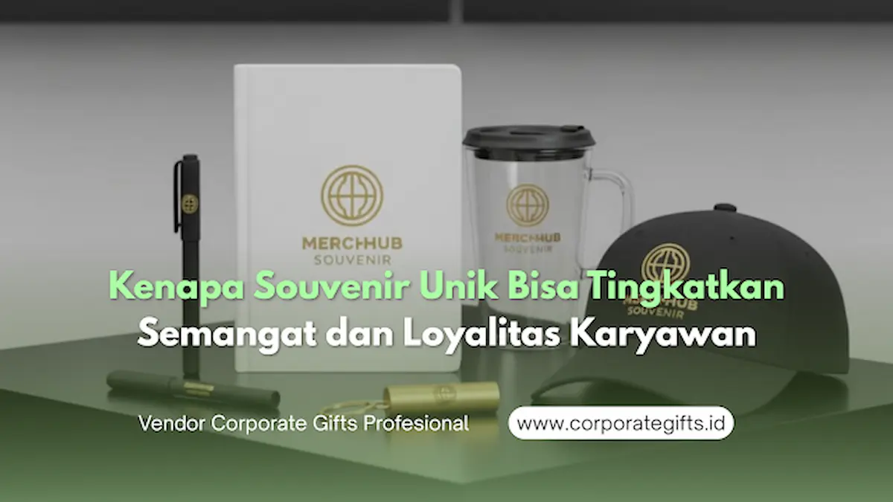

Corporate Gifts ID - Dalam lingkungan kerja modern, perusahaan tidak lagi hanya fokus pada produktivitas dan pencapaian target bisnis angka semata. Manajemen sumber daya manusia (SDM) mulai menyadari bahwa kesejahteraan emosional karyawan memegang peranan krusial dalam menciptakan tim yang solid, berdedikasi tinggi, dan loyal. Salah satu instrumen paling efektif untuk membangun keterikatan tersebut adalah melalui pemberian cinderamata yang tepat sasaran.
Souvenir kantor unik secara langsung meningkatkan semangat dan loyalitas karyawan karena berfungsi sebagai wujud apresiasi nyata yang memperkuat ikatan emosional dan membangun rasa kebersamaan. Alih-alih sekadar hadiah biasa, cinderamata yang dipersonalisasi menyampaikan pesan kuat bahwa setiap individu adalah bagian penting dari kesuksesan organisasi, terutama ketika dibagikan pada momen kolaboratif bersama.
Poin Kunci Souvenir bagi Loyalitas Tim:
- Validasi Emosional: Memberikan pengakuan nyata atas dedikasi dan kerja keras karyawan di luar sekadar kompensasi finansial bulanan.
- Sense of Belonging: Menciptakan rasa kepemilikan dan kebanggaan bersama saat menggunakan merchandise beridentitas seragam di dalam maupun luar kantor.
- Retensi Jangka Panjang: Menurunkan angka turnover karyawan dengan memperkuat keterikatan psikologis terhadap visi korporat.
- Efisiensi Anggaran: Pilihan item fungsional seperti tumbler kustom SUS304, agenda kerja deboss, atau pouch organizer memberikan return on engagement (ROE) yang terukur.
Souvenir sebagai Wujud Apresiasi yang Nyata
Dalam agenda apresiasi seperti employee gathering, perayaan ulang tahun divisi, atau aktivitas outbound team building di destinasi populer seperti Kota Malang dan Batu, momen kebersamaan sangat ideal untuk mempererat hubungan antardivisi. Ketika perusahaan menyiapkan souvenir dengan desain fungsional, menarik, dan berkarakter personal, karyawan akan merasa jauh lebih dihargai dan diakui kontribusinya.
Praktik ini terbukti efektif dalam membangun budaya kerja yang positif dan inklusif. Barang-barang bermanfaat seperti tumbler custom berinsulasi vakum, notebook eksklusif bersampul kulit sintetis, atau gift set bertema gaya hidup sehat menumbuhkan kesan emosional jangka panjang setiap kali barang tersebut digunakan dalam rutinitas harian.
Dampak Psikologis Souvenir Unik terhadap Produktivitas Kerja
Manfaat psikologis dari cinderamata sering kali luput dari kalkulasi awal manajemen, padahal berdampak langsung pada motivasi dan kinerja harian karyawan. Karyawan yang merasa divalidasi memiliki motivasi intrinsik yang jauh lebih tinggi. Validasi ini pada gilirannya mampu menekan tingkat kejenuhan kerja (burnout), menurunkan angka turnover, dan memperkuat efisiensi kerja lintas tim.
Souvenir yang dirancang seragam juga bertindak sebagai instrumen pemersatu identitas organisasi. Penggunaan exclusive tote bag berlogo perusahaan atau jaket fleece korporat di ruang publik, misalnya, akan menumbuhkan kebanggaan tersendiri bagi pemakainya saat merepresentasikan nama instansi tempat mereka berkarya.

Koleksi merchandise kantor dan gift set berdesain eksklusif yang menyatukan identitas tim dalam perayaan employee gathering.
Hubungan Nyata Antara Hadiah dan Loyalitas Karyawan Jangka Panjang
Loyalitas karyawan tidak terbangun dalam semalam melalui instruksi formal, melainkan terbentuk dari konsistensi pengalaman emosional positif yang diciptakan oleh tempat kerja. Souvenir yang dipilih secara strategis dan diberikan pada momen yang tepat mampu menciptakan kedekatan emosional (emotional attachment), membuat individu merasa memiliki andil serta tanggung jawab lebih terhadap masa depan perusahaan.
Berbagai studi manajemen SDM modern membuktikan bahwa korporasi yang konsisten membagikan kenang-kenangan berkualitas tinggi mencatat tingkat retensi karyawan yang jauh lebih tinggi dibandingkan perusahaan yang hanya mengandalkan pendekatan transaksional konvensional.
Tabel Perbandingan: Souvenir Standar vs Souvenir Unik & Personal
Berikut perbandingan mendasar antara pengadaan souvenir generik biasa dengan souvenir kantor berkonsep unik dan personal terhadap keterikatan tim kerja:
| Parameter Evaluasi | Souvenir Standar / Generik | Souvenir Kantor Unik & Personal | Dampak terhadap Budaya Tim |
|---|---|---|---|
| Nilai Fungsionalitas | Rendah; sering kali disimpan di laci atau terbuang | Tinggi; dipakai harian di meja kantor maupun mobilitas luar | Menciptakan kebiasaan kerja positif dan efisien |
| Persepsi Apresiasi | Formalitas belaka; minim sentuhan emosional | Pengakuan tulus atas kerja keras dan loyalitas anggota tim | Meningkatkan kepuasan kerja dan employee engagement |
| Kekuatan Identitas (Branding) | Logo kaku dan dominan layaknya media iklan massal | Branding subtil berpadu dengan estetika modern yang elegan | Karyawan bangga memakainya di ruang publik |
| Pengaruh Retensi SDM | Tidak berdampak signifikan terhadap loyalitas jangka panjang | Menekan turnover rate dengan memperkuat ikatan batin korporat | Membangun ekosistem kerja yang solid dan berdaya saing |
Menyesuaikan Pengadaan Souvenir dengan Skala Budget Acara
Menghadirkan apresiasi yang berkesan bagi tim tidak selalu menuntut alokasi anggaran yang membebani kas perusahaan. Kuncinya terletak pada perencanaan pengadaan yang cerdas serta pemilihan vendor merchandise yang fleksibel.
Bagi perusahaan rintisan (startup) atau UKM bertumbuh, tim HR dapat mengoptimalkan item esensial bernilai pakai tinggi seperti pouch kanvas multifungsi, lanyard berbahan tenun premium, atau botol minum stainless minimalis. Sementara itu, untuk korporasi skala besar, manajemen dapat berinvestasi pada gift set hampers premium dengan hardbox packaging custom dan kartu ucapan bertandatangan pimpinan divisi.
Souvenir Unik sebagai Investasi Budaya Perusahaan
Secara strategis, pengadaan souvenir karyawan bukanlah sekadar beban biaya operasional (cost), melainkan investasi jangka panjang dalam menumbuhkan budaya perusahaan (corporate culture). Cinderamata fisik yang berkualitas menjadi representasi nyata dari nilai-nilai inovatif, kepedulian, dan profesionalisme yang terus melekat dalam keseharian setiap staf.
Saat karyawan merasa dihargai secara tulus melalui perhatian pada hal-hal detail, mereka akan dengan senang hati bertindak sebagai duta merek (brand ambassador) alami perusahaan, baik di hadapan rekan sejawat, klien eksternal, maupun di platform media sosial profesional seperti LinkedIn.
Kesimpulan
Souvenir kantor unik adalah instrumen komunikasi emosional yang terbukti efektif menjembatani hubungan harmonis antara manajemen dan tim kerja. Melalui pemilihan desain fungsional, pesan personal yang relevan, serta dukungan vendor souvenir terpercaya, perusahaan mampu membuktikan komitmennya terhadap kesejahteraan emosional karyawan.
Semangat dan loyalitas sejati dibangun melalui tindakan nyata yang bermakna, bukan semata regulasi tertulis di atas kertas. Konsultasikan rancangan cinderamata dan paket gathering karyawan Anda bersama tim kurator Corporate Gifts ID untuk hasil apresiasi yang memukau dan tepat guna.
Pertanyaan Seputar Souvenir & Loyalitas Karyawan (FAQ)

Ditulis oleh: Sholikhatun Nikmah
Creative Product Designer & Bespoke PackagingDesainer visual dan spesialis kemasan kreatif di CorporateGifts.ID dengan fokus pada personalisasi visual mockup 3D, kurasi seminar kit, souvenir akademik kampus, dan bespoke gift set korporat.
Lihat Profil Lengkap & Panduan Lainnya